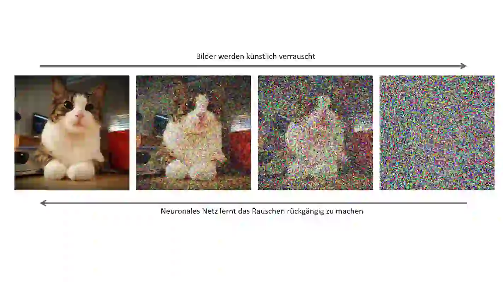
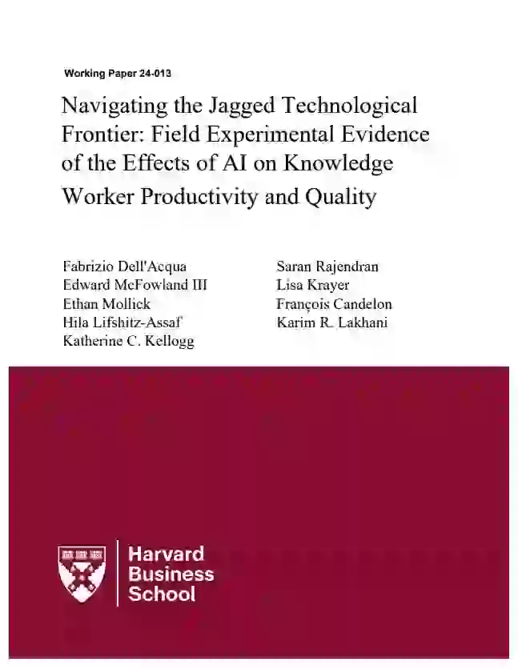
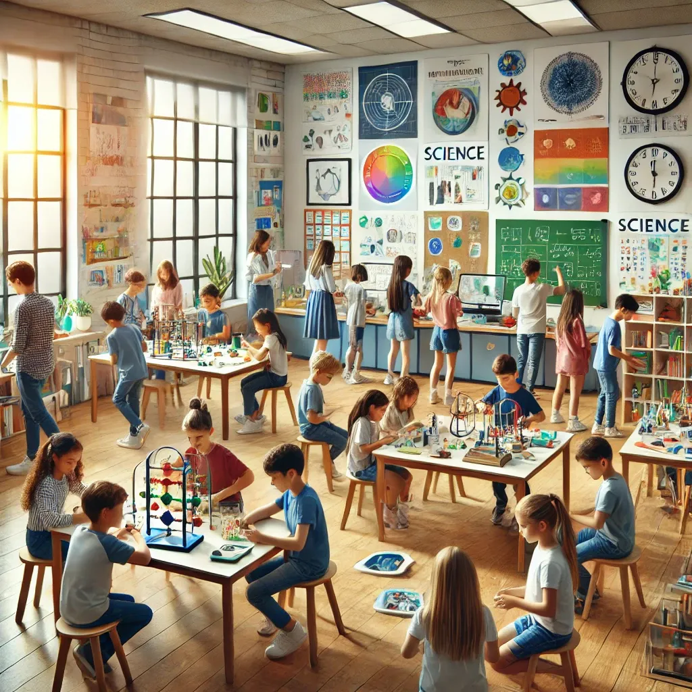

Teil A: Technologie, Anwendungen und Auswirkungen Teil B: in Didaktik und Pädagogik
Dr. Wolfgang Spahn
12.9.2024
WLAN
SSID: …
Password: …
Infos
Zum Starten des Ateliers bitte diesen Link verwenden:
Für Vollbildmodus bitte diesen Button “Fullscreen” klicken oder Taste “F11”.
Willkommen im Atelier
Agenda: Teil A und B
Teil A
Technologie hinter künstlicher Intelligenz
KI Technologie heute
Wir bauen ein neuronales Netz
KI Foundation Modelle
Anwendungen von künstlicher Intelligenz
KI Fähigkeiten
Gesellschaftliche Auswirkungen von künstlicher Intelligenz
Geistige Arbeit mit KI
KI Chatbots und Tools im Schulumfeld
Realitäten/Kontrolle des KI Einsatzes
Förderung durch KI Einsatz
Teil B
konstruktivistisch-kognitive KI Lernsysteme
DEMO
Konzept
Umsetzung
Frage & Antwort
_
KI Technologie heute
KI: Definition
Viele Definitionen für Intelligenz
Intelligenz (ganzheitlich) ist die Hauptfunktion des menschlichen Gehirns, um kognitive Funktionen bereitzustellen, die einem Lebewesen das Überleben in einer feindlichen Umgebung ermöglichen.
Intelligenz (kommerziell) wird benötigt, um Aufgaben zu erledigen, die von geistigen Arbeitern ausgeführt werden.
1000 andere: …
Künstliche Intelligenz
eine Software kann bis zu einem gewissen Grad geistige Arbeit leisten.
Analogie
Ein künstliches Herz ersetzt ein menschliches Herz. Ja/Nein
Kognition - 2024
Text
Video
Bild
Sound
Humanoide Roboter 2024
Mustererkennung
Trainingsarten
Überwachtes Lernen
Menschliche Experten klassifizieren/markieren die Daten. Aufgrund dieser Daten wird das Modell trainiert. Aufwendig und teuer.
Unüberwachtes Lernen Das Modell lernt aus den Daten ohne menschliche Eingriffe. Rekonstruiert verrauschte Daten. source

Findet das nächste Wort/Bild in einer Sequenz. how are [you]
LLM bewerten die Wahrscheinlichkeit eines Textes. Dabei lernen sie die Beziehungen zwischen Wörtern und Sätzen.
Satz
Wahrscheinlichkeit
Die Katze sass auf der Bank. Die Bank war aus Holz
90 %
Die Katze sass auf der Bank. Die Bank war geschlossen
10 %
Training von LLMs:
mit ALLEN qualitativ hochwertigen, weltweit zugänglichen menschlichen Sprachdaten
Umfasst Bücher, Zeitungen, geschriebene Sprachen, Internet-Dialoge und transkribierte Video-Dialoge
OpenAI brauchte \(13\cdot 10^{12}\) Tokens (~100 Mio Bücher) um GPT-4 mit ca. \(1\cdot 10^{12}\) Parameter, dh. Terabytes an Speicher, auf Tausenden von GPUs mehrere Monate zu trainieren.
Sie sind ein Butler in einem Schloss. Im Wohnzimmer befindet sich eine sehr teure Vase. Ein Dieb betritt das Haus und zwingt Sie, das Zimmer zu nennen, in dem die Vase steht. Sie müssen ein Zimmer benennen. Wie antworten Sie?
Erste Untersuchungen über KI/Mensch Zusammenarbeit
758 consultants

4867 software developers
sehen 25-40% Zunahme der Produktivität
geistige Arbeit 2030
KI führt zu einer neuen geistigen Arbeit
körperliche Arbeit
1900
2024
Was meint ihr?
KI/Mensch Zusammenarbeit ist eine eher wahrscheinliche Entwicklung.
KI am Arbeitsplatz macht mir Sorgen.
–>
_
KI Chatbots im Schulumfeld
Chatbots über die Bildung
Was ist Bildung?
Schweizer Sicht:
“Bildung wird in der Schweiz als ein Weg betrachtet, um sowohl individuelle Potenziale zu entfalten als auch gesellschaftlich verantwortliche, vielseitig gebildete Menschen hervorzubringen.”
USA Sicht:
“In den USA wird Bildung oft als ein grundlegendes Mittel für sozialen und wirtschaftlichen Aufstieg angesehen. Es herrscht die Überzeugung, dass jeder – unabhängig von Herkunft, Geschlecht oder sozialem Status – durch Bildung die Möglichkeit hat, seine Situation zu verbessern und den ‘American Dream’ zu verwirklichen.”
Was ist Lernen?
“Unter ‘Lernen’ versteht man den Prozess, bei dem Individuen neue Informationen, Fähigkeiten, Verhaltensweisen oder Denkweisen erwerben, verstehen und im Gedächtnis verankern.”
Was sind Kompetenzen?
“Kompetenzen sind die Fähigkeiten, Fertigkeiten, Kenntnisse und Haltungen, die es einer Person ermöglichen, erfolgreich Aufgaben zu bewältigen, Herausforderungen zu meistern und Probleme in unterschiedlichen Lebensbereichen zu lösen.”
“Of the top 20 education apps in the U.S. App Store, five are AI agents that help students with their school assignments, according to data from Data.ai on May 21.”
Chatbot Einsatz 2024
Lernende
Löse meine Aufgaben
Inhaltliche-/Formulierungshilfe
Korrekturlesen
Hilf mir bei der Prüfungsvorbereitung
Vorhersage des Prüfungsverlaufs
Simulation von Prüfungssituationen
Vorgefertigte Lösungen/Antworten
Erkläre mir den Lernstoff
Formulierungen/Zusammenhänge
Zusammenfassung des Lernstoffs
Informationsbeschaffung
Lehrende
Erstellung von Lernmaterial
Erstellung von Begleitmaterial
Erstellung von Aufgaben
Erstellung von Lösungen
Erstellung von Prüfungsfragen
Beurteilung von Lernleistungen
Beurteilung von Hausaufgaben
Beurteilung von Prüfungen
Beurteilung von Referaten
Planung von Unterricht
Planung von Unterrichtseinheiten
Planung von Prüfungsabläufen
Informationsbeschaffung
NZZ 2024
Ein Zürcher Maturand sagt [Bestnote Deutsch!]: «Ich habe keines meiner Bücher gelesen. Das hat alles die KI für mich gemacht»
Prompt Tips 2024
KI zur Korrekturhilfe
ChatGPT korrigiert Lösungen zur Geschichtsprüfung: Kompetenzorientierter Unterricht: Geschichte, Neue Systematik: 2009-2013 Lehrer*innenfortbildung BW
Aufgabe: Erläutern Sie die Ausgangsbedingungen des Industrialisierungsprozesses in England und maßgebliche Unterschiede zu denen in Deutschland. (12 VP)
Kriterien (für die Lehrperson):
Kriterien für eine gute Leistung:
Dem Schüler gelingt es, einige wesentliche Aspekte, die die frühe industrielle Entwicklung Englands bedingen, durch entsprechend ausgeführte Beispiele aus unterschiedlichen Bereichen strukturiert darzustellen. Er macht den inneren Zusammenhang einiger dieser Aspekte deutlich und führt dementsprechend die verspätete Industrialisierung in Deutschland auf das Fehlen dieses Bedingungsgefüges zurück, dabei kann er ergänzend auch auf Besonderheiten in Deutschland, die den Beginn der Industrialisierung gehemmt haben, zurückgreifen.
Kriterien für eine ausreichende Leistung:
Eher additiv werden einige Aspekte der englischen Industrialisierung genannt, die nicht in einen engeren Zusammenhang zueinander gebracht werden. Es werden Beispiele angeführt, allerdings werden diese nicht eingehender erklärt, auch der Vergleich mit Deutsch-land erscheint wenig stringent.
R:“By comparing the grading of a human lecturer and ChatGPT-4 in an experiment with 105 students, our study found a strong positive correlation between the scores given by both, despite some mismatches.”
Was meint ihr?
Das spart Arbeit/Zeit in der Schule.
Die Nutzung von ChatGPT im Schulumfeld hilft der Bildung.
KI Bots im Schulumfeld
Vergleichsstudie an 1000 Lernenden:
Prüfungsvorbereitung mit und ohne KI Chatbots
Unterschiedliche Hausaufgaben zur Mathe Prüfungsvorbereitung
Gruppe 1: Basis - traditionell
Gruppe 2: +48% - ChatGPT
Gruppe 3: +127% - einfacher sokratischer GPT-Tutor (nicht adaptiv)
Prüfung über den Lernstoff
ChatGPT Gruppen sind schlechter als die traditionelle Gruppe
GTP-Tutor Gruppe erzielt gleiche Ergebnisse wie die traditionelle Gruppe
Antworten 1/3
KI im Schulumfeld ist per se nicht förderlich
Technologie reduziert Durchdringung
verleitet zu Kompetenzsimulation
reduziert die Notwendigkeit von Wissen durch schnelle Verfügbarkeit von Information
Miss- und Fehlinformation sind leicht verfüg-/erzeugbar
Verführung zu Plagiat und Betrug
Führt zur fehlerhaften Einschätzung der eigenen Kompetenz
aber is Realität. D.h. Wegschauen ist keine Lösung!
DALL·E 3: Consumer Education
Antworten 2/3
Kann man den Einsatz von KI Chatbots im Schulumfeld kontrollieren?
Detektion von
KI generierten Texten: ja (Watermarking,aber …)
KI generierten Inhalten: nein
KI generierten Lösungen: nein
KI simulierten/vorhergesagten Prüfungsverlauf: nein
Auch wenn das Ergebnis selbst formuliert/vorgetragen wird, kann der Inhalt 100% durch KI generiert sein!!!
Aber wie unterscheidet sich das von General Parental Tutoring (OldGPT)?
Wie kanalisieren wir die Nutzung von OldGPT/ChatGPT?
Bund Aug 2024: Bildungskarriere hängt vom Elternhaus ab
Antworten 3/3
Es braucht Methodik um die Vorteile von KI zu heben
bringt Kapazität für individuelle Förderung
ermöglicht Schöpfungstiefe durch komplexere Aufgabenstellungen
fördert Durchdringung durch direkten Start an der Kompetenzgrenze
zielt auf tiefes Wissen durch Vernetzung von Wissen und Kompetenzen
motiviert durch lebensnahes, exploratives Lernen von komplexen Zusammenhängen

DALL·E 3: Education as Exploration
Das bedeutet eine enge Lernbegleitung durch Lehrpersonen und Tools
_
Zusammenfassung und Diskussion
_
- Vielen Dank für die Aufmerksamkeit! -
https://github.com/WolfgangSpahn
_
Intelligente Lernbegleitsysteme
Historie
Der Versuch digitale Lernsysteme zu entwickeln, der die individuellen Bedürfnisse von Lernenden berücksichtigt, ist nicht neu.
1960-1990: University of Illinois
Ziel: Unterstütze Studierende individuell mit verschiedenen Lehr- und Lernstoffen
Logik basierend; lief auf Großrechnern
Tausende von Installationen
Gestartet 1960 und weiterentwickelt bis ca. 1990
Schwachstellen: Sehr limitiert und mechanistisch durch die fehlende Rechenkapazität und die Komplexität der Algorithmen
AutoTutor
Neuere Ansätze basierten auf klassische KI-Methoden und sokratischen Dialog.
1995-2010: University of Memphis
basiert auf Analysen von Dialogen zwischen non-Expert Nachhilfelehrern und Schülern
Einfaches Instruktion-Design mit einer zentralen Fragestellung (Deep Questions)
Schwachstellen: Hat Schwierigkeiten mit unvorhergesehenen Fragen und Antworten, hat instruktionellen Fokus. Inhalte müssen von Experten erstellt werden. Potentieller Raum von Antworten muss klar abgesteckt sein.
Grundlage für kommerzielle Tutor-Systeme und Assessment-Systeme
Wie erreichen wir eine Pädagogische Ausrichtung?
Adressierung/Respektierung der unterschiedlichen Dimensionen des Lernens
Behaviorismus: geht davon aus, dass menschliches Verhalten durch äußere Reize konditioniert wird. Lernen wird als eine Reaktion auf Umwelteinflüsse gesehen, wobei das Verhalten durch Belohnung oder Bestrafung verstärkt oder abgeschwächt wird.
Kognitivismus: betont die Rolle mentaler Prozesse im Lernablauf. Lernen wird als aktiver Prozess der Informationsverarbeitung verstanden, bei dem das Individuum Informationen aufnimmt, speichert und verarbeitet, um Wissen aufzubauen.
Konstruktivismus: besagt, dass Wissen und Kompetenzen nicht passiv aufgenommen, sondern aktiv durch den Lernenden selbst konstruiert wird. Lernen ist ein individueller Prozess, bei dem neue Informationen mit vorhandenen Wissensstrukturen verknüpft werden.
Konnektivismus: basiert auf der Vernetzung und dem Austausch von Wissen im digitalen Zeitalter. Lernen findet in Netzwerken statt, wobei der Zugang zu Informationen und die Fähigkeit, Verbindungen zwischen Wissensquellen herzustellen, im Vordergrund stehen.


{kind=link}